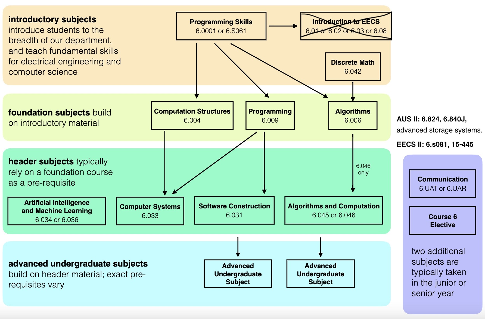

About Me¶
I like studying computer science through open courses. While having stumbled many times, I’ve learned from mistakes and developed an interest in storages and system programming. I was fortunate enough to get an Outreachy 2022 Internship working with QEMU which embarks my journey of open source world. During a year after the summer project, I’ve worked on adding full emulation to the qcow2 driver and making the metadata of ZNS emulation persistent with the help of QEMU mentors. My primary objective is to gain a solid understanding of the fundamental principles that underpin our world and the ability to build practical applications in life.
OCW¶
course plan:
Math¶
Biology¶
IAP¶
Selective¶
HASS¶
已弃：
（对我）过理论的数学课比如数学分析OTLML方向暂时不打算学社会科学的书籍zzz生科的任何课尤其是实验perfection & procrastination金融学理论
Harvard Systems Programming and Machine Organization Course. Great system programming 101. I have taken it instead of traditional 15-213 because it has more open materials to learn. ↩︎
19fall materials(tutorials, recitations) ↩︎
20spr videos of Robert Morris, 22spr schedule, 23spr lab ↩︎
following 6.828 19fall(project/quizzies) ↩︎